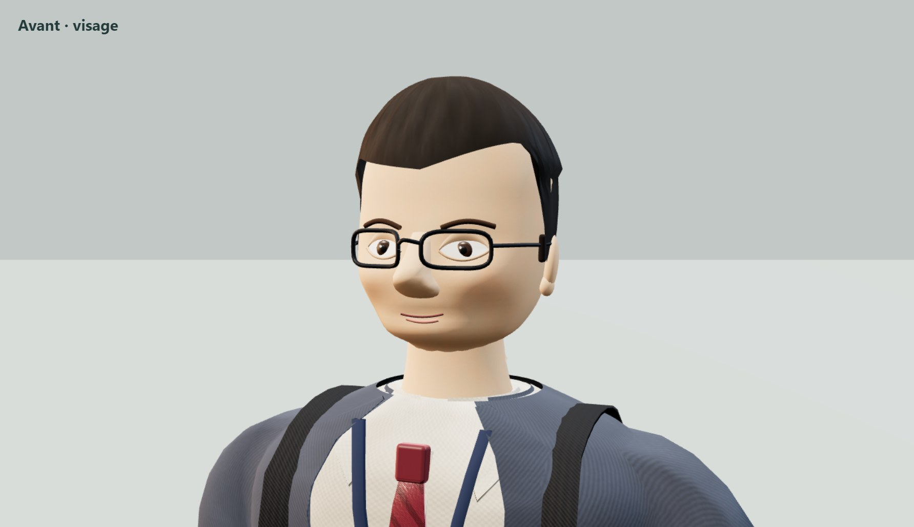
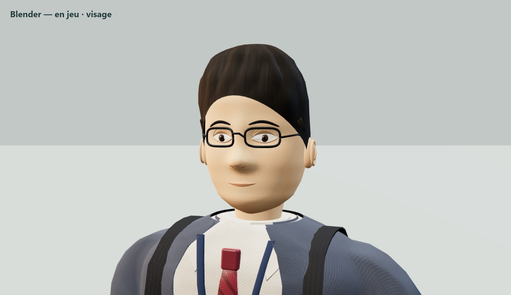
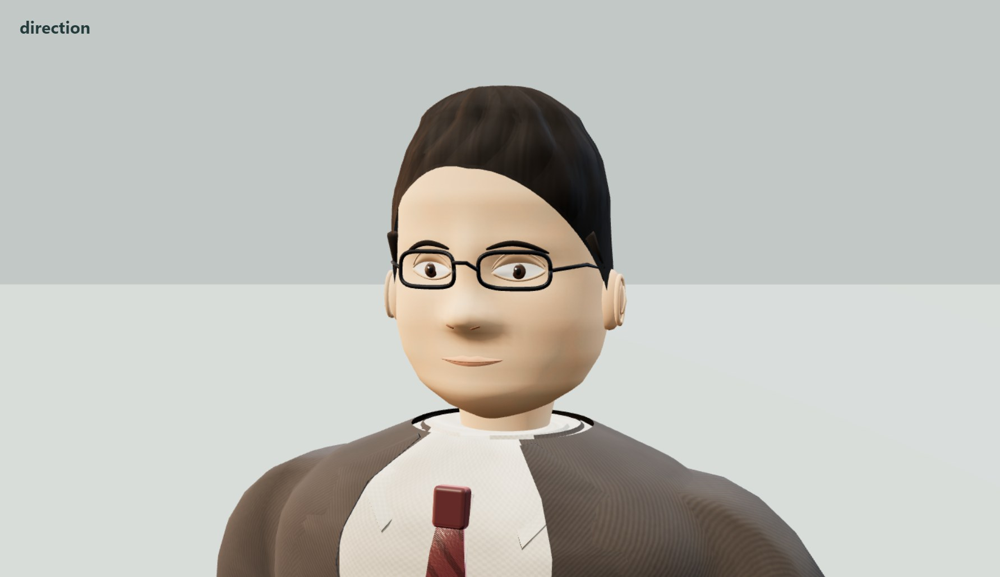
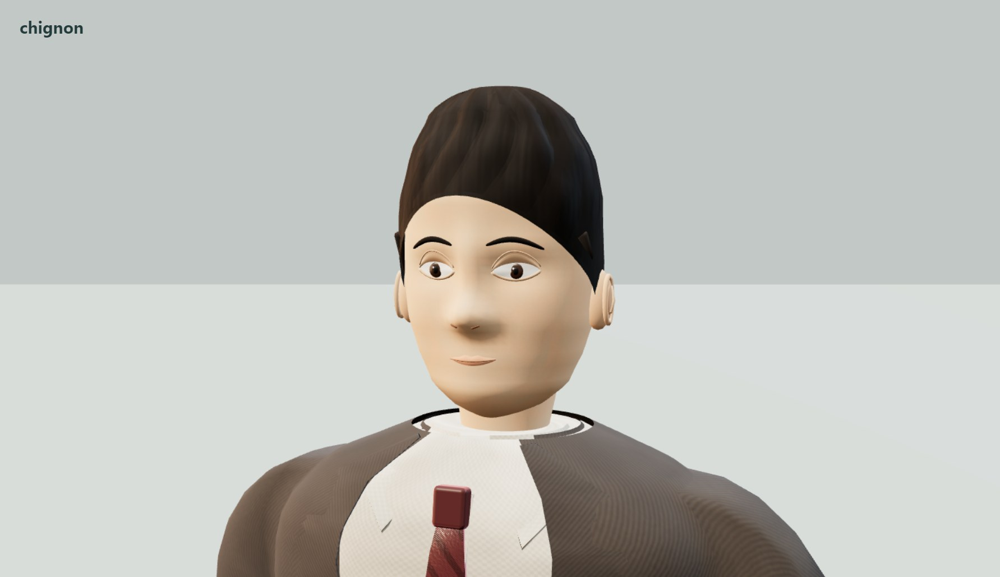
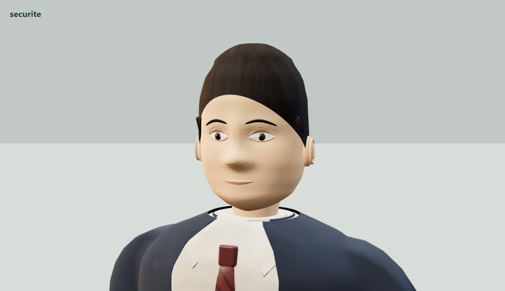

Des visages et des mains modelés dans Blender
Escape your boss · version 1.4.0. Captures du moteur du jeu : les nouvelles têtes et mains sont utilisées par Lao D et les collègues dans les six niveaux. Le corps habillé et le sac gardent leur construction existante.
Sources Blender et guide de retouche · Rapport de revue de la version installée
Comparaison

Avant — anatomie procédurale
Après — modules Blender intégrés au jeuMême caméra et éclairage de studio. Le joueur utilise sa pose animée ; la référence ancienne conserve sa pose neutre. Les gros plans servent aussi à rendre visibles les limites du modèle.
Quatre silhouettes de visage
Lao D / employés — mèches balayées, monture ajustée.
Direction — mâchoire plus forte, implantation différente.
Chignon — visage plus fin, cheveux attachés à l’arrière.
Sécurité — coupe plus courte, mâchoire élargie.
Les mains dans les quatre emotes
Les doigts prennent des poses distinctes : main ouverte, doigts repliés et index tendu. Vidéos des animations réelles du joueur, sans son.
SalutArroganceMoulinGeste en L
Direction stylisée, sans capture faciale ni simulation musculaire. Les fichiers Blender conservent les pièces éditables et les clés de forme pour poursuivre la sculpture.